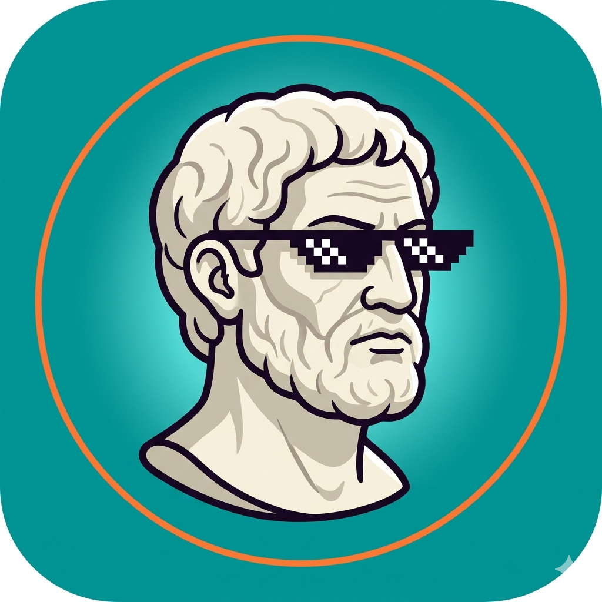

📜 L'app per creare citazioni improbabili — e ultime parole famose.
Inquadra chiunque — amici, colleghi, perfetti sconosciuti — e scatta. Oppure scegli dalla galleria.
L'app ti permette di ritagliare il viso e posizionarlo perfettamente sulla citazione.
Inserisci la citazione più improbabile che ti viene in mente. E il nome di chi — ovviamente — l'ha detta.
L'app genera la citazione in bianco e nero, con bordi sfumati e stile da classico a stampa. Scaricala e mandala a tutti.
"Ho sempre trovato il lunedì mattina profondamente ingiusto."
— Marco Aurelio, imperatore romano